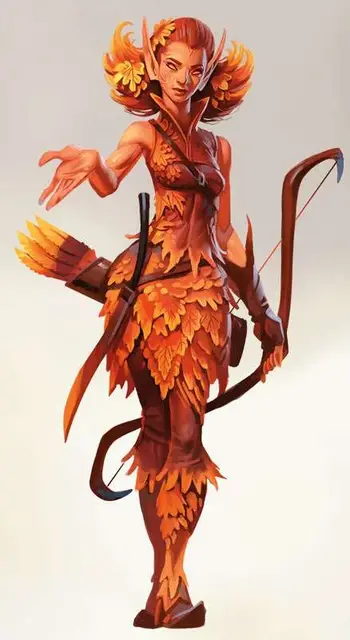

Осенний эладрин
Autumn Eladrin
Средняя Фея (Эльф), обычно хаотично-нейтральная

Класс Доспеха 19 (природный доспех)
Хиты 165 (22к8 + 66)
Скорость 30 футов
| мод | спас | ||
|---|---|---|---|
| СИЛ | 12 | +1 | +1 |
| ЛОВ | 16 | +3 | +3 |
| ТЕЛ | 16 | +3 | +3 |
| мод | спас | ||
|---|---|---|---|
| ИНТ | 14 | +2 | +2 |
| МДР | 17 | +3 | +3 |
| ХАР | 18 | +4 | +4 |
Навыки Медицина +7, Проницательность +7
Сопротивление урону психическая энергия
Чувства тёмное зрение 60 футов, пассивное Восприятие 13
Языки Общий, Сильван, Эльфийский
Опасность 10 (5900 опыта)
Бонус мастерства +4
Среда обитания Лес
Особенности
Пленительное обаяние. Любое существо, не являющееся эладрином и начинающее свой ход в пределах 60 футов от эладрина, должно сделать спасбросок Мудрости Сл 16. При провале существо становится очарованным эладрином на 1 минуту. При успехе существо становится невосприимчивым к данной особенности любого эладрина на 24 часа.
Каждый раз, когда эладрин причиняет урон очарованному существу, оно может повторить спасбросок, оканчивая эффект при успехе.
Сопротивление магии. . Эладрин совершает с преимуществом спасброски от заклинаний и прочих магических эффектов.
Действия
Мультиатака. Эладрин совершает две атаки Длинным мечом или Длинным луком. Вместо одной из атак он может наложить заклинание.
Длинный меч. . Рукопашная атака оружием: +5 к попаданию, досягаемость 5 футов, одна цель. Попадание: 5 (1к8 + 1) рубящего урона или 6 (1к10 + 1) рубящего урона, если используется двумя руками, плюс 22 (5к8) урона психической энергией
Длинный лук. . Дальнобойная атака оружием: +7 к попаданию, дистанция 150/600 футов, одна цель. Попадание: 7 (1к8+3) колющего урона плюс 22 (5к8) урона психической энергией.
Использование заклинаний. Эладрин накладывает одно из следующих заклинаний, используя Харизму в качестве базовой характеристики и без использования материальных компонентов (Сл спасброска от заклинаний 16):
• Неограниченно: удержание личности [hold person];
• 2/день каждое: лечение ран [cure wounds] (вариант 5-го уровня), малое восстановление [lesser restoration];
• 1/день каждое: высшее восстановление [greater restoration], возрождение [revivify].
Бонусные действия
Фейский шаг (перезарядка 4-6). Бонусным действием эладрин может телепортироваться на расстояние до 30 футов на свободное пространство, находящееся в его поле зрения.
Реакции
Принуждение к миру. Если существо, очарованное эладрином совершает бросок атаки в пределах 60 футов от эладрина, эладрин магически заставляет атаку промахнуться, если он видит атакующего.
Описание
“Если осенний эладрин пригласит вас на ужин, приходите с пустым желудком. Их доброта распространяется на огромные порции.
Примечание для себя: послать кого-нибудь из моих друзей весенних эладринов навестить Морденкайнена. Это научит его расслабляться.”
— Таша
Эладрины пребывают в зелёном великолепии Страны Фей. Они связаны с эльфами, живущими на Материальном плане, и напоминают их как в их любви к красоте, так и в ценности, которую они придают личной свободе. Но где другие эльфы могут укротить свою дикую натуру, эладрины – существа, управляемые эмоциями, и из-за их уникальной магической природы они подвергаются физическим изменениям, чтобы соответствовать изменчивостью их характера.
Эладрины провели столетия в Стране Фей, и в результате, большинство из них стали настоящими фейскими сущностями. Представленные здесь эладрины относятся к разновидности фей. Некоторые из них по-прежнему гуманоиды, похожие на их других родственников-эльфов.
Магия, протекающая через эладринов, реагирует на их эмоциональное состояние, превращая их в разные сезонные формы, со своим уникальным поведением и способностями, которые меняются с их формами. Некоторые эладрины могут оставаться в определённом аспекте в течение многих лет, в то время как другие проходят через эмоциональный спектр каждую неделю.
Изменчивая природа
Всякий раз, когда эладрин заканчивает продолжительный отдых, он может сменить свою форму, если дееспособен. Этой формой может быть летний эладрин, осенний эладрин или зимний эладрин. Когда эладрин делает это изменение, он использует блок статистики новой формы, вместо старой. Любой ущерб, нанесённый эладрину в его первоначальной форме, относится к новой форме, как и любые условия или другие продолжающиеся эффекты, влияющие на неё.
Осенний эладрин
Эладрины часто входят в осенний сезон, когда их переполняет доброжелательность. В этом аспекте они останавливают конфликты и облегчают страдания, используя свою магию, чтобы исцелять, лечить и облегчать любую хворь, которая может поразить людей, приходящих к ним за помощью. Такие эладрины не терпят насилия в их присутствии и быстро прибегают к разрешению споров, чтобы наладить мир.